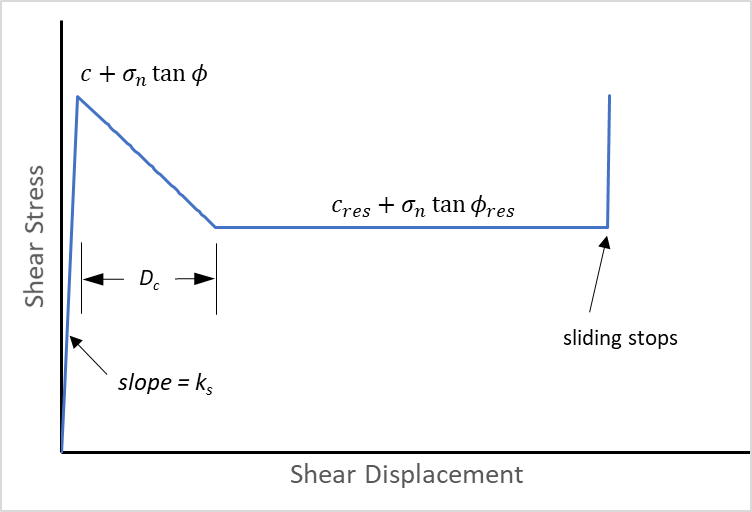
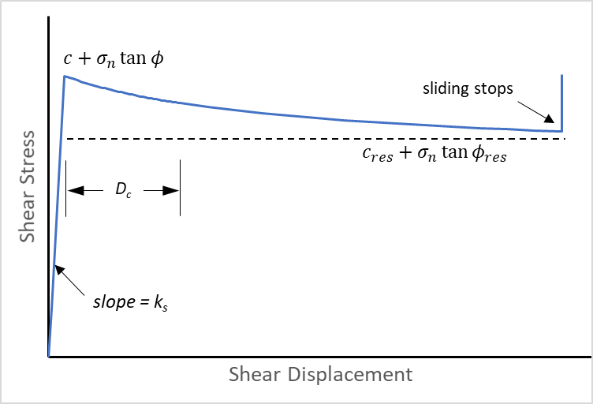
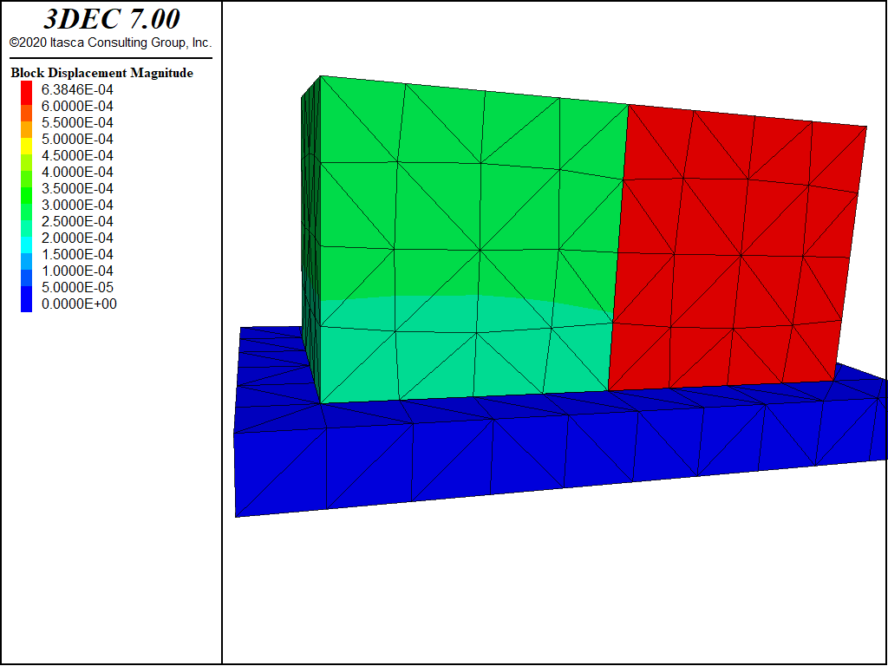
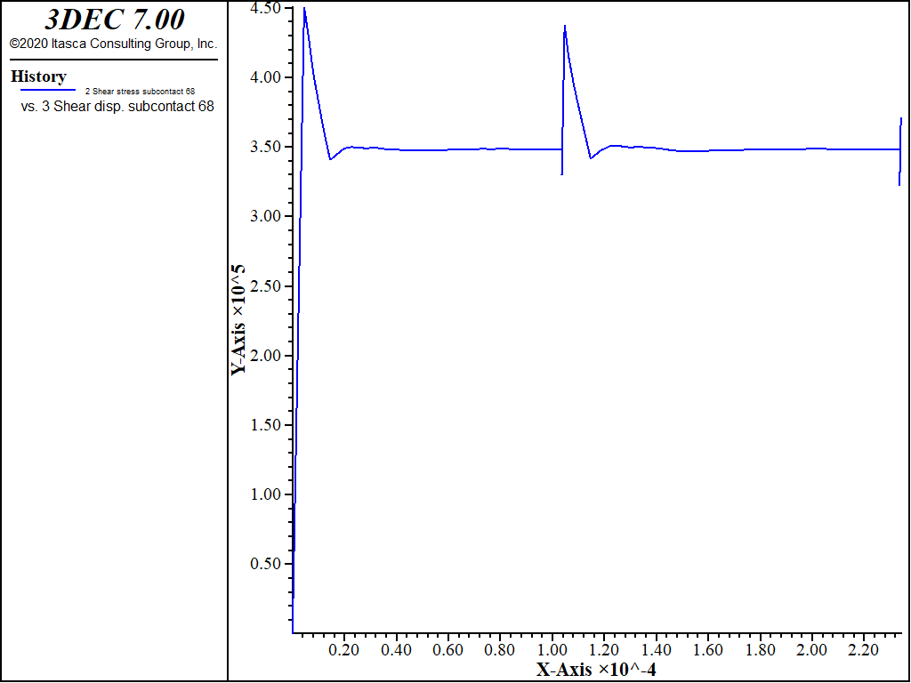
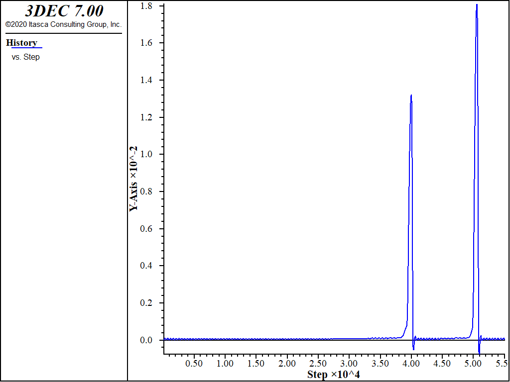
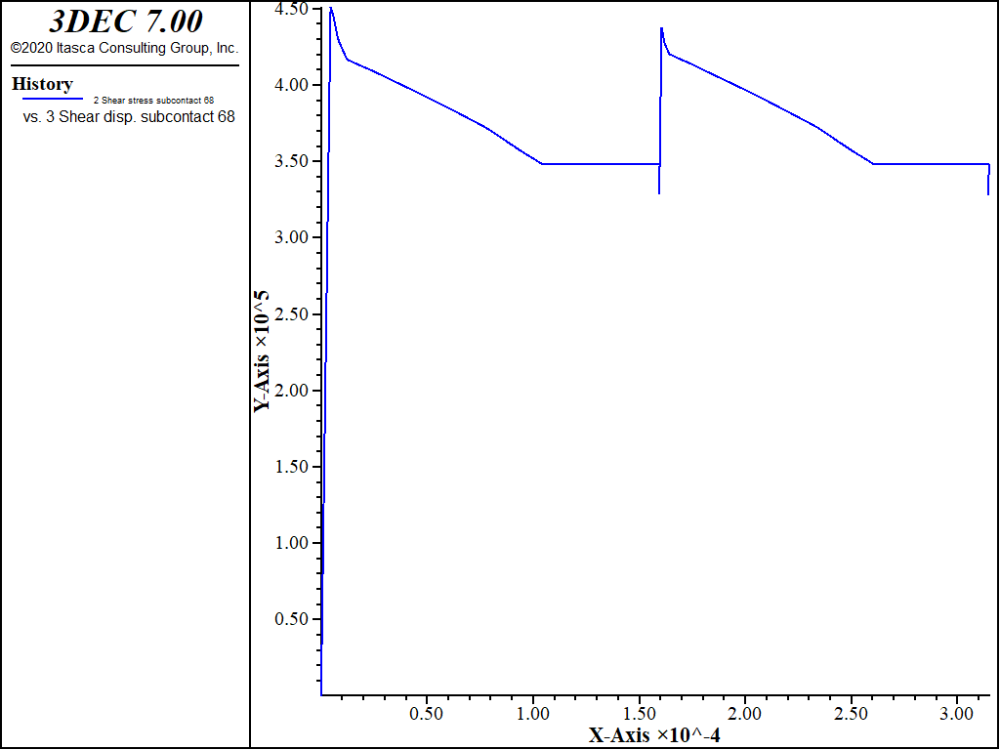
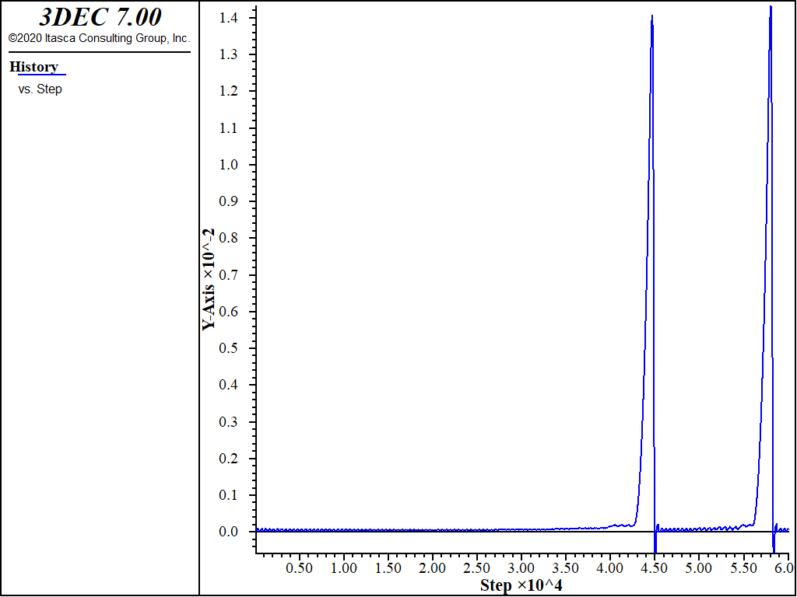
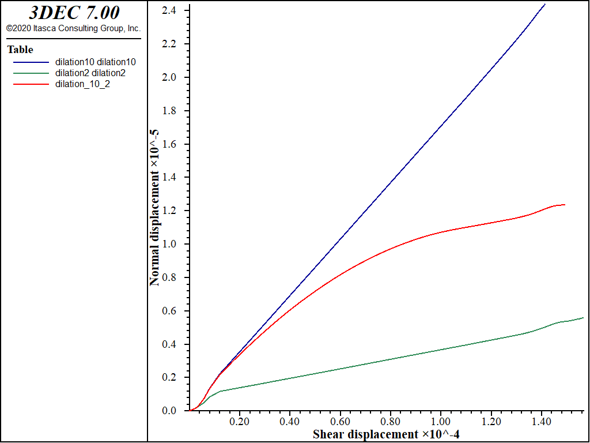

3DEC 中的软化愈合 Mohr-Coulomb 节理模型
将 Mohr-Coulomb 节理模型用于模拟地震活动时，存在以下不足：
- 开始滑移时，应力瞬间下降（抗剪强度从峰值瞬间降至残余值）。这意味着所有滑移事件都是地震性事件（见图 1（Figure 1））。
- 一旦发生滑移，断层强度就无法恢复到峰值。这意味着无法产生黏滑行为。

公式
软化愈合 Mohr-Coulomb 模型基于标准 Mohr-Coulomb 模型，增加了以下两点：
- 节理开始滑移时，抗剪强度在用户指定的临界滑移距离 \(D_c\) 内由峰值演化至残余值。
- 滑移停止时，抗剪强度瞬间恢复至峰值。
拉力不发生软化或愈合。超过抗拉强度时，抗拉强度瞬间下降（无软化），并保持在残余值（无愈合）。
对于未滑移的节理，黏聚力和摩擦取峰值。超过强度后，强度成为滑移距离的函数。滑移距离超过临界滑移距离时，采用黏聚力和摩擦的残余值。提供两种抗剪强度演化公式。
线性
线性软化时，抗剪强度按下式计算：
其中，\(c\) 为黏聚力，\(\sigma_n\) 为法向应力，\(\phi\) 为摩擦角，\(c_resid\) 为残余黏聚力，\(\phi_{resid}\) 为残余摩擦角，\(D_c\) 为临界滑移距离，\(u_s^p\) 为自滑移开始以来的塑性剪切位移（滑移量）。滑移停止时，抗剪强度瞬间恢复至峰值，\(u_s^p\) 重设为 0。图 2（Figure 2） 给出了一个无黏聚力子接触的示例。


图 2：恒定法向应力下滑移节理的剪应力与剪切位移关系，采用线性软化规律。
非线性
非线性软化时，抗剪强度按下式计算：
其中，\(\alpha\) 为决定强度下降程度的指数（> 1），见图 3（Figure 3）。


图 3：恒定法向应力下滑移节理的剪应力与剪切位移关系，采用非线性软化规律。
剪胀（\(\psi\)）的变化方式与黏聚力或摩擦相同。如果指定非零残余剪胀，则在 \(\alpha\) = 0（线性）时，剪胀按下式变化：
对于非线性情况，剪胀为：
如果未提供 \(\psi_{resid}\) 的值，其默认值为 \(\psi_{peak}\)
子接触破坏状态与3DEC 中的莫尔—库仑节理模型（Mohr-Coulomb Joint Model In 3DEC）相同。
示例
要在 3DEC 中查看本例，使用菜单命令 。选择“3DEC/ Constitutive_Models/ SHMohr_Model”，再选择“shmohr.prj”加载。所用数据文件（data files）列于本例末尾。
采用三个块体模拟弹簧滑块问题，如图 4（Figure 4） 所示。在滑块顶面施加 1 MPa 的法向应力，在系统右侧施加 1 mm/s 的速度。然后运行模型，直到发生一个或多个滑移事件。
该试验模拟直剪试验，其中只有一条水平节理，先施加法向约束应力，再施加单向剪切位移。图 5（Figure 5） 显示了该模型；节理由一个包含 10 个子接触的接触定义。
为滑动节理赋予以下强度属性：
峰值摩擦角，\(\phi\) = 25 度 残余摩擦角，\(\phi_{resid}\) = 20 度 临界滑移距离，\(D_c = 1x10^{-4} , 1x10^{-5}\) Alpha 指数，\(\alpha\) = 0（线性）


图 4：弹簧滑块试验中的 3DEC 块体布置。
图 5（Figure 5） 至图 8（Figure 8） 显示了不同 \(D_c\) 值下，节理摩擦及剪切速度与剪切位移的关系。为便于比较，各速度图采用相同的最大值。软化效应十分明显，较小 \(D_c\) 值的模型中观测到的较高速度，提示了一种区分地震性与非地震性滑移事件的可能判据。


图 5：\(D_c\) = 1e-5 时，软化愈合 Mohr-Coulomb 节理模型的平均剪应力与剪切位移关系。


图 6：\(D_c\) = 1e-5 时，软化愈合 Mohr-Coulomb 节理模型的剪切速度与剪切位移关系。


图 7：\(D_c\) = 1e-4 时，软化愈合 Mohr-Coulomb 节理模型的平均剪应力与剪切位移关系。


图 8：\(D_c\) = 1e-4 时，软化愈合 Mohr-Coulomb 节理模型的剪切速度与剪切位移关系。
为检验变化的剪胀，又运行了三次试验：剪胀角恒定为 10 度、剪胀角恒定为 2 度，以及剪胀角在临界滑移距离 \(D_c\) 为 1e-4 的过程中由 10 度演化至 2 度。图 9（Figure 9） 显示了三种情况下法向位移与剪切位移的关系。


图 9：剪胀角恒定为 10 度、恒定为 2 度以及从 10 度演化至 2 度时的法向位移与剪切位移关系。
数据文件
spring-slider.dat
model new
model random 10000
model config energy
model large-strain off
; 滑块长方体
block create brick -1 1 -1 1 -1 1
; 弹簧长方体
block create brick 1 3 -1 1 -1 1
; 底座长方体
block create brick -1.5 3.5 -1.5 1.5 -1.5 -1
block zone gen edgelength 0.5
block zone cmodel assign el
block zone prop dens 2000 bulk 1e11 shear 0.6e11
; 弹簧
block contact jmodel assign el
block contact prop stiffness-normal 1e9 stiffness-shear 1e9
;滑块与底座接触，采用零摩擦的 Mohr-Coulomb 模型
block hide range pos-x -1 1 pos-z -1 1
block contact jmodel assign mohr
block contact prop stiffness-normal 1e11 stiffness-shear 1e11
block hide off
; 滑动接触
block hide range pos-x 1 3 pos-z -1 1
block contact jmodel assign softening-mohr
; 节理参数
block contact prop stiffness-normal 1e11 stiffness-shear 1e11 friction 25 friction-res 20 tens 1e12 dc 1e-4
block hide off
block insitu stress 0 0 -1e6 0 0 0
block face apply stress-zz -1e6 range pos-z 1
block fix range pos-z -1.5 -1
model solve
model save 'blocks'
=====================================
block gridpoint ini disp 0 0 0
block contact reset disp
; ==== 用于历史的 FISH 函数 =====
[cxi0 = block.subcontact.near(0,0,0)]
fish def sh_mu
sh_mu = block.subcontact.prop(cxi0,'friction-current')
end
block gridpoint apply vel-x 1.0e-3 range pos-x 2.9 3.1
block contact his stress-norm pos 0 0 0
block contact his stress-shear pos 0 0 0
block contact his dis-shear pos 0 0 0
; 获取速度
block hide range pos-z -1.5 -1
block his vel-x pos 0 0 0
block hide off
fish history sh_mu
block his fob
model save 'initial'
================================
; dc = 1e-4
model rest 'initial'
his interval 100
model cyc 30000
his interval 10
model cyc 30000
model save 'spring-slider-dc1e-4'
===========================================
; dc 1e-5
model rest 'initial'
block hide range pos-x 1 3 pos-z -1 1
block contact prop dc 1e-5
block hide off
his interval 100
model cyc 30000
his interval 10
model cyc 25000
model save 'spring-slider-dc1e-5'
========================================
dilation.dat
; 测试剪胀角随滑移变化的文件
model rest 'blocks'
block gridpoint ini disp 0 0 0
block contact reset disp
block gridpoint apply vel-x 1.0e-3 range pos-x 2.9 3.1
block contact his stress-norm pos 0 0 0
block contact his stress-shear pos 0 0 0
block contact his dis-shear pos 0 0 0
block contact his dis-norm pos 0 0 0
; 用于计算剪胀的函数
fish def get_dilation
local cx0 = block.subcontact.near(0,0,0)
local ndis = block.subcontact.dis.norm(cx0)
local sdis = math.mag(block.subcontact.dis.shear(cx0))
global dilation = math.atan(ndis/sdis)/math.degrad
local status = io.out('Dilation = '+string(dilation))
end
model save 'initial'
; ========= 剪胀角恒为 10 =============
; 设置节理参数
block hide range pos-x 1 3 pos-z -1 1
block contact prop dilation 10
block hide off
his interval 100
model cyc 30000
his interval 10
model cyc 15000
[get_dilation]
his export '4' vs '3' table 'dilation10'
table 'dilation10' export 'dilation10.tab'
; ========= 剪胀角恒为 2 =============
model rest 'initial'
; 设置节理参数
block hide range pos-x 1 3 pos-z -1 1
block contact prop dilation 2
block hide off
his interval 100
model cyc 30000
his interval 10
model cyc 15000
[get_dilation]
his export '4' vs '3' table 'dilation2'
table 'dilation2' export 'dilation2.tab'
; ========= 剪胀角从 10 变化至 2 =============
model rest 'initial'
; 设置节理参数
block hide range pos-x 1 3 pos-z -1 1
block contact prop dilation 10 dilation-res 2
block hide off
his interval 100
model cyc 30000
his interval 10
model cyc 15000
[get_dilation]
his export '4' vs '3' table 'dilation_10_2'
table 'dilation10' import 'dilation10.tab'
table 'dilation2' import 'dilation2.tab'
属性
- softening-mohr
- alpha f
决定摩擦下降程度的指数（>= 1）。如果 \(alpha\) = 0，则采用线性摩擦降低关系。
- cohesion f
节理黏聚力。
- cohesion-residual f
节理残余黏聚力。
- dc f
摩擦从峰值降至残余值所经过的滑移距离。
- dilation f
节理剪胀角，单位为度。
- dilation-zero f
节理停止剪胀时的剪切位移。
- friction f
峰值摩擦角，单位为度。
- friction-current f
当前摩擦角，单位为度（只读）。
- friction-residual f
节理残余摩擦角，单位为度。
- healing b
如果设为 true，滑移停止时摩擦恢复至峰值。默认值为 true。
- slip
塑性剪切滑移量（只读）
- stiffness-normal f
节理法向刚度（应力／距离）
- stiffness-shear f
节理剪切刚度（应力／距离）
- tension f
抗拉强度。
- tension-residual f
残余节理抗拉强度。
参考文献
Rice, J., 1983。“断层滑移与地震失稳的本构关系”，Pure Appl. Geoph., 116, 790-806, 1983。
| 这些内容对您有帮助吗？… | FLAC3D © 2019, Itasca | 原文更新于 2020 年 10 月 8 日 |